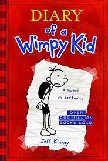
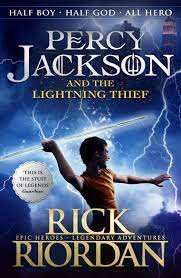
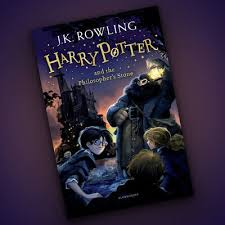
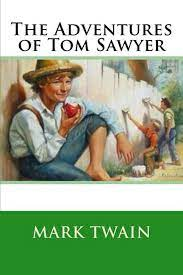

Team Learnify is proud to present our favorite book recommendations! These are books that we have found to be incredibly insightful, thought-provoking, and inspiring. We believe that these books have the power to change the way you think and live, and we recommend them wholeheartedly. So without further ado, here are our top book recommendations:

"Wimpy Kid" is a popular book series written by Jeff Kinney that has captured the hearts of young readers around the world. The series follows the life of middle schooler Greg Heffley, who is often seen as a "wimpy kid" by his peers. The books are written in the form of a journal, with Greg documenting his everyday experiences and challenges in a humorous and relatable way.
One reason for the success of "Wimpy Kid" is its ability to connect with readers through its authenticity. The series portrays the awkwardness, insecurities, and triumphs of adolescence, making it relatable to a wide audience.
From navigating school cliques to dealing with family dynamics, the series touches on universal themes that resonate with readers of all ages.
Another factor contributing to the series' popularity is its use of illustrations. The books feature a mix of text and drawings, adding to its appeal for younger readers who may be intimidated by longer books. The illustrations also serve to enhance the humor and visual storytelling of the series, making it more engaging for readers.
Beyond its entertaining content, "Wimpy Kid" has also been praised for its educational value.
The books have been used in classrooms to teach literacy skills, as well as to spark discussions about social and emotional development. The series has also been lauded for promoting empathy and understanding among young readers, by depicting characters from diverse backgrounds and experiences.
The success of "Wimpy Kid" has extended beyond its original books, inspiring multiple movies and spin-off books. The movies have brought the characters to life on screen, allowing fans to experience their favorite moments from the books in a new way. The spin-off books, including "Diary of an Awesome Friendly Kid" and "Rowley Jefferson's Awesome Friendly Adventure," have expanded the "Wimpy Kid" universe and introduced new characters and storylines.
In conclusion, "Wimpy Kid" is a beloved book series that has captured the hearts of young readers around the world. Its authentic portrayal of adolescence, use of illustrations, and educational value have made it a staple in children's literature.
Go to the menu.

Percy Jackson is a series of young adult fantasy novels written by Rick Riordan. The series follows the adventures of a demigod named Percy Jackson, who discovers that he is the son of Poseidon, the Greek god of the sea. The books are set in a world where the gods of Greek mythology are real and interact with mortals in various ways.
The first book in the series, "Percy Jackson and the Lightning Thief," was published in 2005. It introduces the reader to Percy Jackson, a troubled twelve-year-old boy who struggles with dyslexia and ADHD. Percy soon discovers that he is a demigod and is sent to Camp Half-Blood, a summer camp for demigods. There, he learns about his heritage and his abilities as a child of the gods.
The plot of the book revolves around Percy's quest to retrieve Zeus's stolen lightning bolt. Along the way, he teams up with his best friend, Grover, a satyr, and Annabeth Chase, a daughter of Athena. Together, they face various challenges and obstacles as they journey across the United States in search of the bolt.
One of the strengths of the Percy Jackson series is its ability to blend mythology with modern-day life. The series is set in contemporary America, and the characters face issues that are relevant to modern-day readers. This combination of ancient mythology and modern-day life is what makes the series so appealing to readers of all ages.
Another strength of the series is the depth of the characters. Percy Jackson is a flawed protagonist who struggles with his own insecurities and shortcomings. He is not the typical hero, but rather a relatable character that readers can identify with. Similarly, the supporting characters, such as Annabeth and Grover, are also well-developed and add depth to the story.
The series also touches on important themes such as friendship, loyalty, and the importance of family. Percy's relationships with Annabeth and Grover are an important part of the series, and their loyalty to each other is a key factor in their success.
Overall, the Percy Jackson series is an engaging and entertaining read that appeals to readers of all ages. The blend of mythology and modern-day life, along with the relatable characters and important themes, make the series a classic in the world of young adult literature.
Go to the menu.

The Harry Potter series is a collection of seven fantasy novels written by British author J.K. Rowling. The series follows the life of young wizard, Harry Potter, as he navigates through the magical world of Hogwarts School of Witchcraft and Wizardry and battles against the evil wizard, Lord Voldemort.
The series begins with Harry Potter and the Philosopher's Stone, where we are introduced to Harry, an orphaned boy who lives with his cruel aunt and uncle until he discovers that he is a wizard and is accepted into Hogwarts.
Along with his friends Ron Weasley and Hermione Granger, Harry sets out to uncover the truth about his parents' deaths and stop Lord Voldemort from regaining his power.
Throughout the series, readers are immersed in a world filled with magical creatures, spells, and mysteries.
Rowling's writing transports readers to a fantastical world that is both whimsical and dangerous. As Harry grows up and faces greater challenges, the books become darker and more complex, exploring themes of love, loss, and sacrifice.
The Harry Potter series has been praised for its richly drawn characters, intricate plot, and immersive world-building.
It has become a cultural phenomenon, with fans all over the world and a franchise that includes movies, theme parks, and merchandise.
But beyond its entertainment value, the series has also had a significant impact on popular culture and society. It has inspired a generation of readers and has been credited with reviving interest in reading among young people. The books have also tackled issues such as prejudice, discrimination, and social injustice, making them more than just a simple children's series.
Overall, the Harry Potter series is a testament to the power of imagination and storytelling. It is a beloved classic that continues to captivate readers of all ages and has left an indelible mark on literature and popular culture.
Go to the menu.

The Adventures of Tom Sawyer is a classic novel written by Mark Twain, one of America's most celebrated authors. Published in 1876, the book is set in the mid-1800s and tells the story of Tom Sawyer, a mischievous young boy growing up in the fictional town of St. Petersburg, Missouri.
Tom Sawyer is a character that many readers can relate to. He is adventurous, curious, and has a bit of a rebellious streak. He loves to explore and play games with his friends, and often gets into trouble with his aunt, who is raising him.
One of the most memorable scenes in the book is when Tom and his friend Huckleberry Finn witness a murder in a graveyard. They swear to keep it a secret, but their guilt eventually catches up with them, and they come forward with the truth. This scene is a powerful commentary on the importance of honesty and integrity, even in the face of fear and danger.
Throughout the book, Twain uses humor and wit to convey important messages about the world around us. He tackles issues such as racism, social class, and the importance of education in a way that is both entertaining and thought-provoking.
Another important theme in the book is the idea of growing up and coming of age. Tom Sawyer and his friends are on the cusp of adolescence, and they are struggling to find their place in the world. Twain captures the essence of this struggle perfectly, showing us the ups and downs of growing up through the eyes of a young boy.
Overall, The Adventures of Tom Sawyer is a timeless classic that has captivated readers for generations. It is a beautifully written book that explores themes that are still relevant today. Twain's wit and humor make the book both entertaining and insightful, and his message about the importance of honesty, integrity, and growing up still resonates with readers of all ages.
Written By : Yashoba Wickramage (Student 4)
Go to the menu.